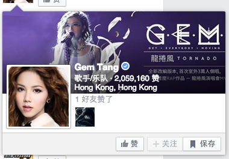

1. 将下列div增加边框 鼠标划过时边框变色
1
2
3
4
5
2. 制作一个固定的头部导航 以及一个固定的背景图片（不随滚动条变化）
背景图位置：image/html6/bg.png
3. 将下面的div内容 按照下图的显示修改样式 调整内容的大致位置（不修改dom结构，右下角的功能不需要实现）

下大雨...
4. 请参照事例中的图片，制作一个带三角形边缘的图片（只实现图片及三角边缘部分，其他文字及头像不必实现）
图片资源位置：image/html6/deng.jpg
